20 · Base de données
Les 50 armes, fiche par fiche
Chaque fiche donne la catégorie, la capacité du chargeur, les dégâts par balle quand ils sont publiés, et la valeur de revente. Le nom d’origine reste sous le nom français, parce que c’est celui que tu lis à l’écran.
50 armesDonnées publiques
Comment lire une fiche d’arme
La ligne du haut donne la catégorie réelle du jeu, pas une appréciation. La description reprend la capacité, les dégâts par balle et les dégâts aux protections quand le jeu les publie. Les valeurs de revente varient : elles servent à trancher entre deux armes trouvées dans le même raid.
Les menues options du menu, et à quoi elles servent
| Filtre | Ce que tu obtiens | Quand l’utiliser |
|---|
| Chercher | Résultat en tapant le nom français ou le nom d’origine | Quand tu connais le nom exact affiché à l’écran du jeu, souvent en anglais. |
| Catégorie | Une famille d’armes, avec le libellé du jeu traduit | Pour comparer deux armes du même rôle avant de dépenser. |
| Grade minimum | Tout ce qui est au moins aussi rare que le grade choisi | Pour ne garder que la partie haute du catalogue, celle qui se revend. |
| Trier par | Nom, valeur, valeur par case ou grade | La valeur par case pour un sac plein ; la valeur brute pour une arme qu’on garde. |
Un mot sur le tri par valeur : sur une arme, la valeur brute et la valeur par case ne racontent pas la même chose. Une arme encombrante vaut plus cher à la revente, mais elle occupe des cases dans le sac pendant tout le raid. Si tu comptes la sortir, regarde la valeur brute ; si tu comptes la revendre en chemin, regarde la valeur par case.
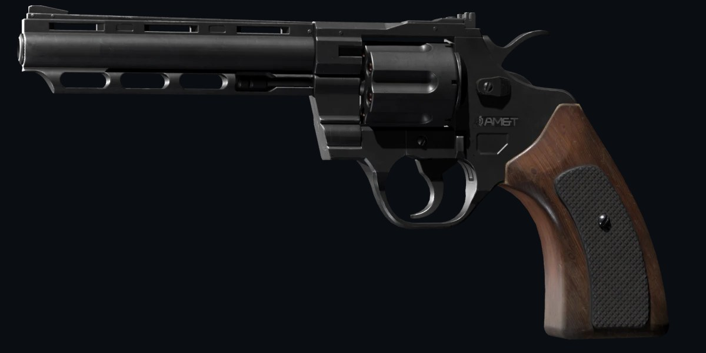
.357, revolver
.357 Revolver · pistolet
Cette arme est classée pistolet dans le jeu. Son chargeur standard contient 6 coups. Chaque balle inflige 56 dégâts et 39 dégâts aux protections. Valeur de référence 13 184 Tekniq soit 6 592 par case occupée.
13 184 Tekniqgrade 0 non classé · 6 592 par case
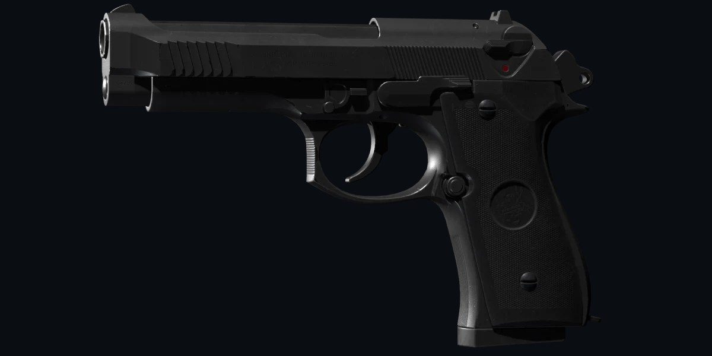
93R
93R · pistolet
Cette arme est classée pistolet dans le jeu. Valeur de référence 15 129 Tekniq soit 7 565 par case occupée.
15 129 Tekniqgrade 0 non classé · 7 565 par case
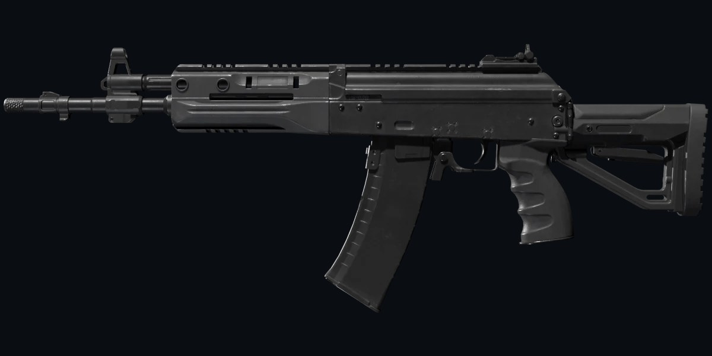
AK-12, fusil d'assaut
AK-12 Assault Rifle · fusil d'assaut
Cette arme est classée fusil d'assaut dans le jeu. Valeur de référence 88 629 Tekniq soit 8 863 par case occupée.
88 629 Tekniqgrade 0 non classé · 8 863 par case
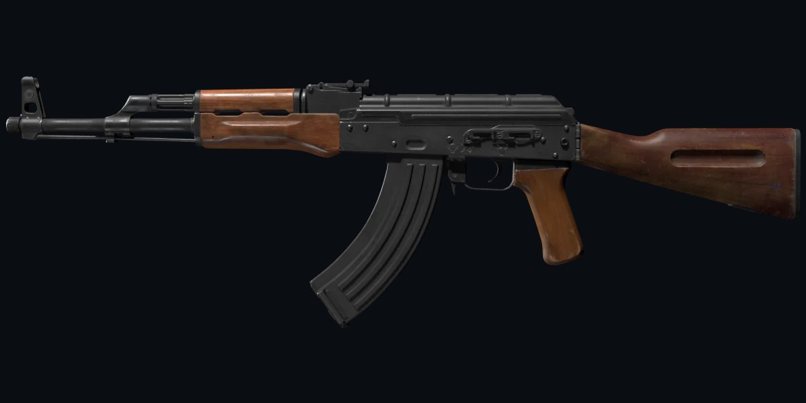
AKM, fusil d'assaut
AKM Assault Rifle · fusil d'assaut
Cette arme est classée fusil d'assaut dans le jeu. Valeur de référence 110 867 Tekniq soit 11 087 par case occupée.
110 867 Tekniqgrade 0 non classé · 11 087 par case
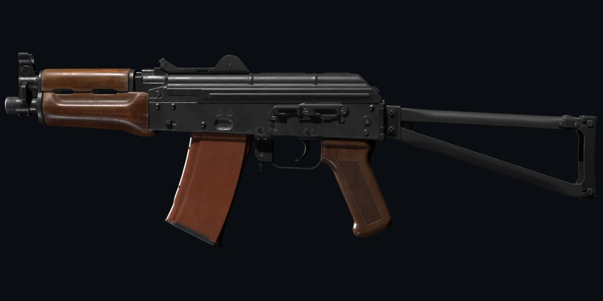
AKS-74, fusil d'assaut
AKS-74 Assault Rifle · fusil d'assaut
Cette arme est classée fusil d'assaut dans le jeu. Valeur de référence 11 554 Tekniq soit 1 155 par case occupée.
11 554 Tekniqgrade 0 non classé · 1 155 par case
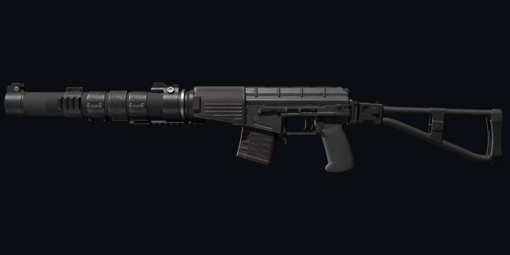
AS Val, fusil d'assaut
AS Val Assault Rifle · fusil d'assaut
Cette arme est classée fusil d'assaut dans le jeu. Son chargeur standard contient 20 coups. Valeur de référence 146 749 Tekniq soit 14 675 par case occupée.
146 749 Tekniqgrade 0 non classé · 14 675 par case
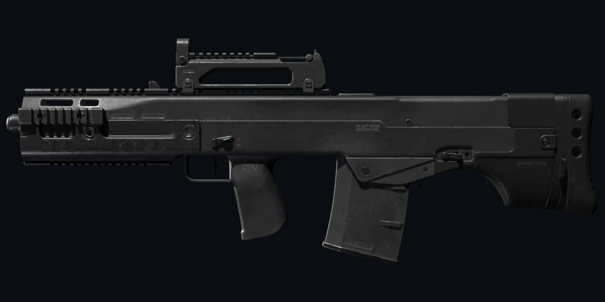
ASh-12, fusil d'assaut
ASh-12 Assault Rifle · fusil d'assaut
Cette arme est classée fusil d'assaut dans le jeu. Valeur de référence 126 705 Tekniq soit 12 671 par case occupée.
126 705 Tekniqgrade 0 non classé · 12 671 par case
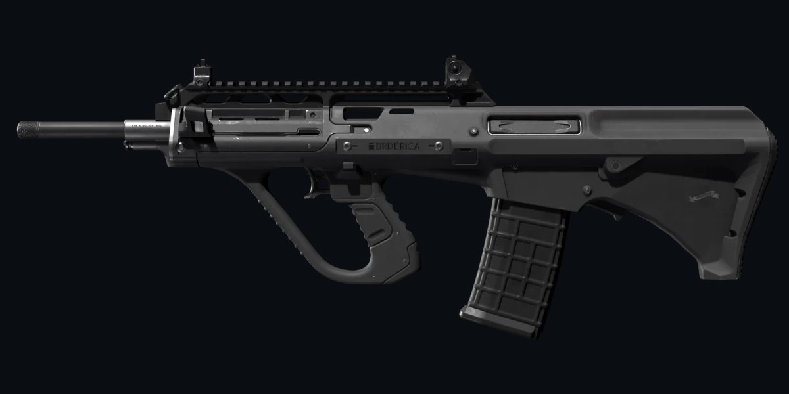
AUG, fusil d'assaut
AUG Assault Rifle · fusil d'assaut
Cette arme est classée fusil d'assaut dans le jeu. Valeur de référence 127 003 Tekniq soit 15 875 par case occupée.
127 003 Tekniqgrade 0 non classé · 15 875 par case
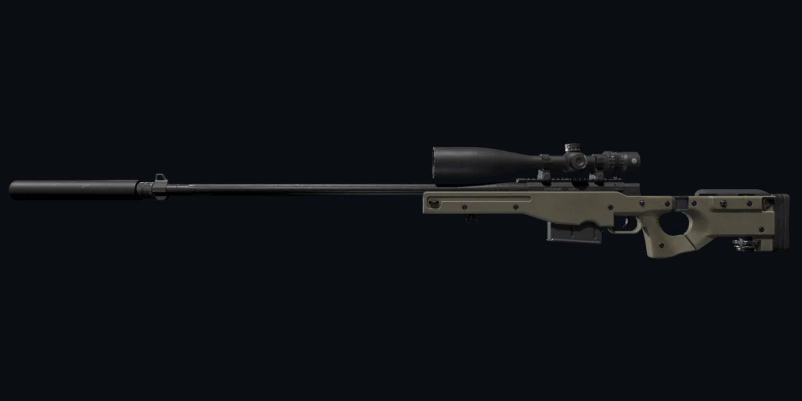
AWM, fusil de précision
AWM Sniper Rifle · fusil de précision
Cette arme est classée fusil de précision dans le jeu. Valeur de référence 521 249 Tekniq soit 86 875 par case occupée.
521 249 Tekniqgrade 0 non classé · 86 875 par case
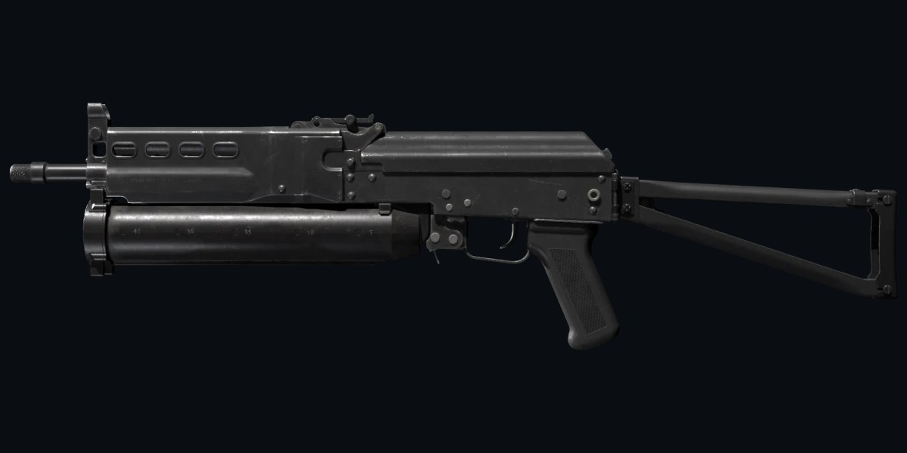
Bizon, pistolet-mitrailleur
Bizon Submachine Gun · pistolet-mitrailleur
Cette arme est classée pistolet-mitrailleur dans le jeu. Valeur de référence 11 540 Tekniq soit 1 443 par case occupée.
11 540 Tekniqgrade 0 non classé · 1 443 par case
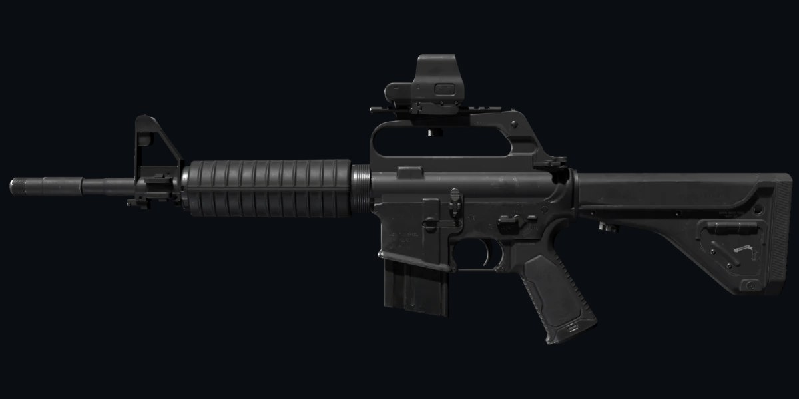
CAR-15, fusil d'assaut
CAR-15 Assault Rifle · fusil d'assaut
Cette arme est classée fusil d'assaut dans le jeu. Valeur de référence 11 824 Tekniq soit 1 182 par case occupée.
11 824 Tekniqgrade 0 non classé · 1 182 par case
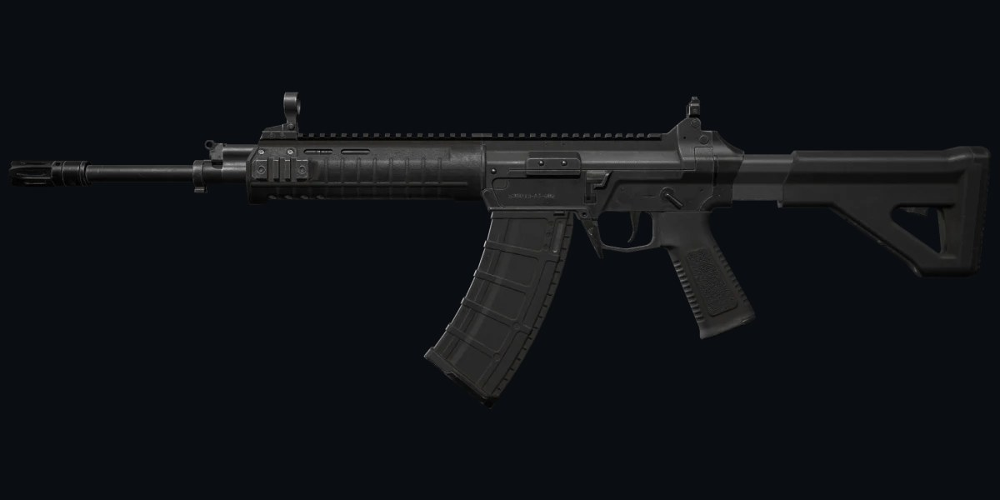
CI-19, fusil d'assaut
CI-19 Assault Rifle · fusil d'assaut
Cette arme est classée fusil d'assaut dans le jeu. Valeur de référence 106 551 Tekniq soit 10 655 par case occupée.
106 551 Tekniqgrade 0 non classé · 10 655 par case
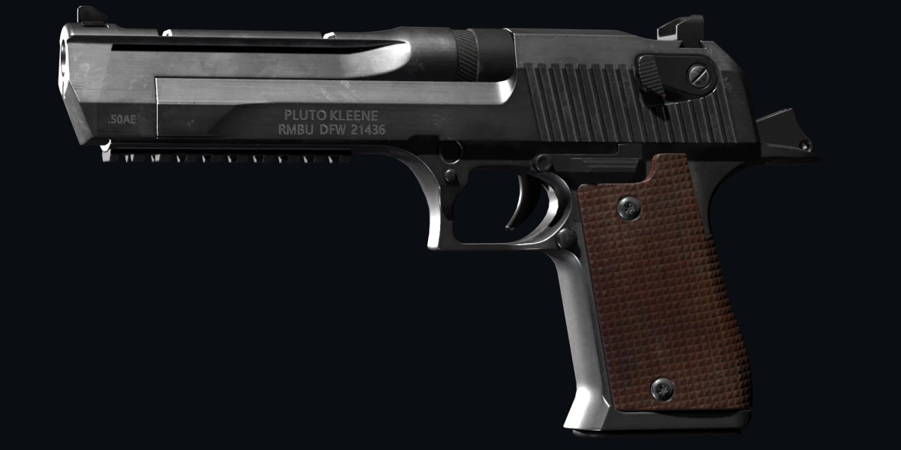
Desert Eagle
Desert Eagle · pistolet
Cette arme est classée pistolet dans le jeu. Son chargeur standard contient 7 coups. Chaque balle inflige 56 dégâts et 53 dégâts aux protections. Valeur de référence 17 015 Tekniq soit 8 508 par case occupée.
17 015 Tekniqgrade 0 non classé · 8 508 par case
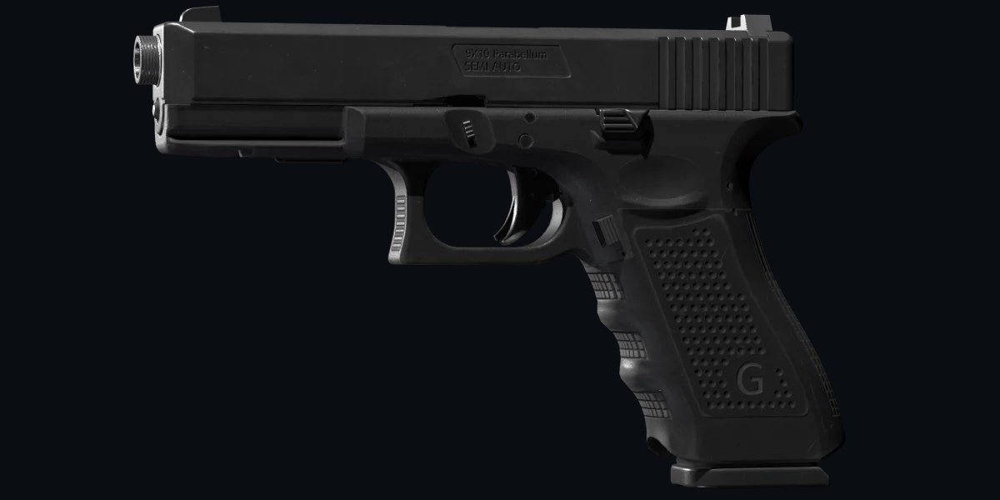
G17
G17 · pistolet
Cette arme est classée pistolet dans le jeu. Son chargeur standard contient 17 coups. Chaque balle inflige 27 dégâts et 25 dégâts aux protections. Valeur de référence 4 630 Tekniq soit 2 315 par case occupée.
4 630 Tekniqgrade 0 non classé · 2 315 par case
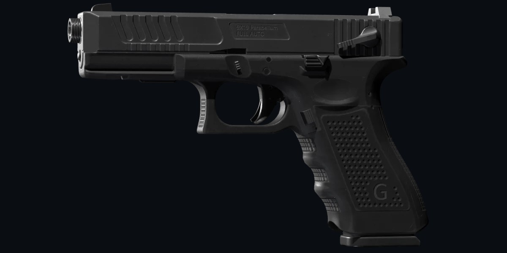
G18
G18 · pistolet
Cette arme est classée pistolet dans le jeu. Son chargeur standard contient 17 coups. Chaque balle inflige 23 dégâts et 16 dégâts aux protections. Valeur de référence 18 137 Tekniq soit 9 069 par case occupée.
18 137 Tekniqgrade 0 non classé · 9 069 par case
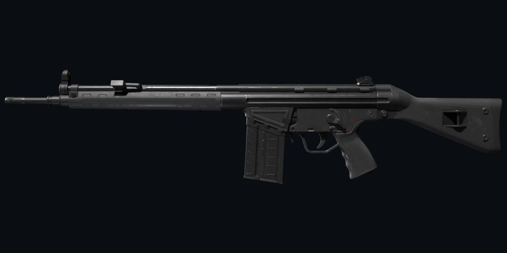
G3, fusil de combat
G3 Battle Rifle · fusil d'assaut
Cette arme est classée fusil d'assaut dans le jeu. Son chargeur standard contient 20 coups. Chaque balle inflige 39 dégâts. Valeur de référence 63 423 Tekniq soit 6 342 par case occupée.
63 423 Tekniqgrade 0 non classé · 6 342 par case
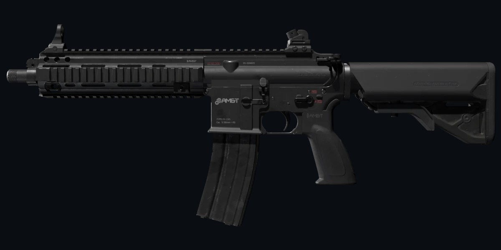
K416, fusil d'assaut
K416 Assault Rifle · fusil d'assaut
Cette arme est classée fusil d'assaut dans le jeu. Valeur de référence 125 618 Tekniq soit 12 562 par case occupée.
125 618 Tekniqgrade 0 non classé · 12 562 par case
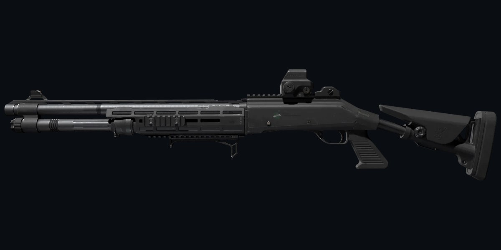
M1014, fusil à pompe
M1014 Shotgun · fusil à pompe
Cette arme est classée fusil à pompe dans le jeu. Son chargeur standard contient 7 coups. Valeur de référence 26 352 Tekniq soit 2 635 par case occupée.
26 352 Tekniqgrade 0 non classé · 2 635 par case
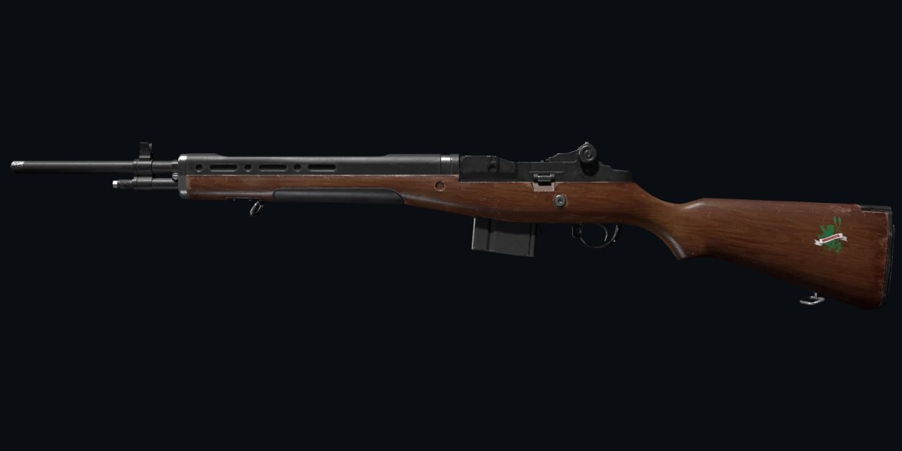
M14, fusil de précision semi-auto
M14 Marksman Rifle · fusil de précision semi-auto
Cette arme est classée fusil de précision semi-auto dans le jeu. Valeur de référence 90 246 Tekniq soit 9 025 par case occupée.
90 246 Tekniqgrade 0 non classé · 9 025 par case
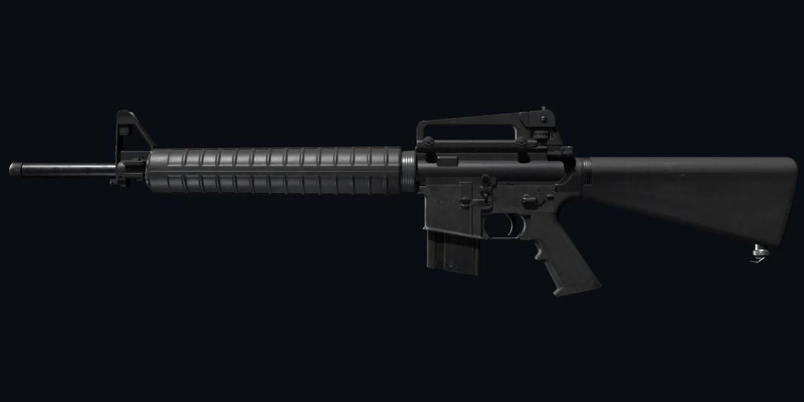
M16A4, fusil d'assaut
M16A4 Assault Rifle · fusil d'assaut
Cette arme est classée fusil d'assaut dans le jeu. Son chargeur standard contient 30 coups. Valeur de référence 10 481 Tekniq soit 1 048 par case occupée.
10 481 Tekniqgrade 0 non classé · 1 048 par case
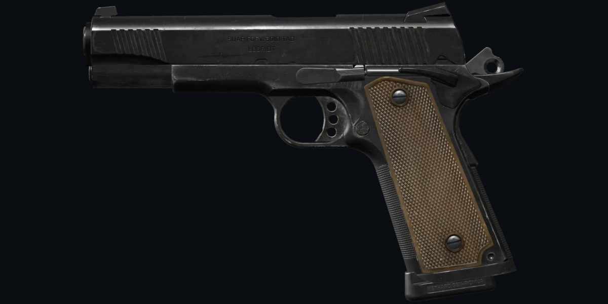
M1911
M1911 · pistolet
Cette arme est classée pistolet dans le jeu. Valeur de référence 16 199 Tekniq soit 8 100 par case occupée.
16 199 Tekniqgrade 0 non classé · 8 100 par case
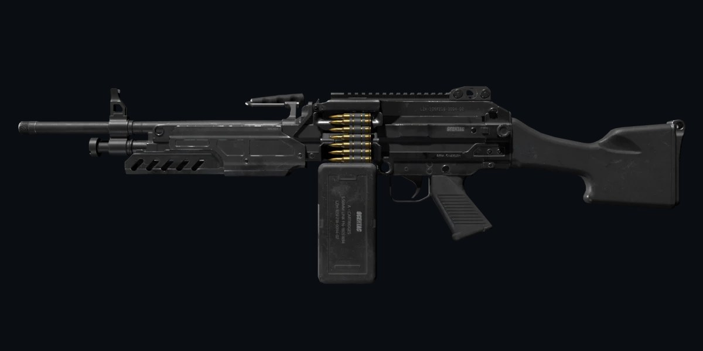
M249, mitrailleuse légère
M249 Light Machine Gun · mitrailleuse légère
Cette arme est classée mitrailleuse légère dans le jeu. Valeur de référence 56 364 Tekniq soit 4 697 par case occupée.
56 364 Tekniqgrade 0 non classé · 4 697 par case
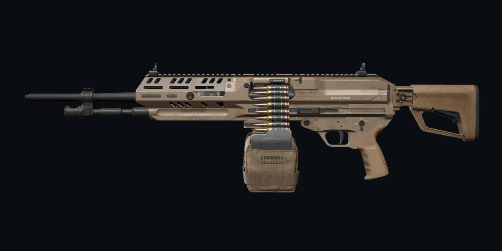
M250, mitrailleuse lourde
M250 General Machine Gun · mitrailleuse légère
Cette arme est classée mitrailleuse légère dans le jeu. Valeur de référence 147 879 Tekniq soit 12 323 par case occupée.
147 879 Tekniqgrade 0 non classé · 12 323 par case
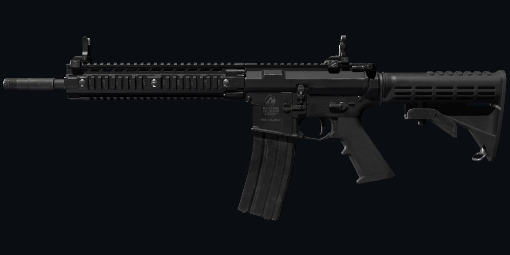
M4A1, fusil d'assaut
M4A1 Assault Rifle · fusil d'assaut
Cette arme est classée fusil d'assaut dans le jeu. Son chargeur standard contient 30 coups. Chaque balle inflige 31 dégâts. Valeur de référence 106 560 Tekniq soit 10 656 par case occupée.
106 560 Tekniqgrade 0 non classé · 10 656 par case
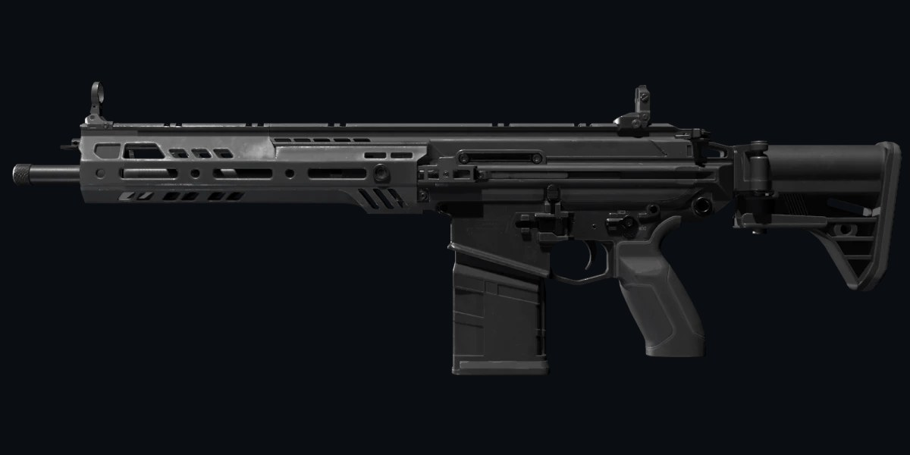
M7, fusil de combat
M7 Battle Rifle · fusil d'assaut
Cette arme est classée fusil d'assaut dans le jeu. Son chargeur standard contient 20 coups. Chaque balle inflige 37 dégâts et 40 dégâts aux protections. Valeur de référence 178 376 Tekniq soit 17 838 par case occupée.
178 376 Tekniqgrade 0 non classé · 17 838 par case
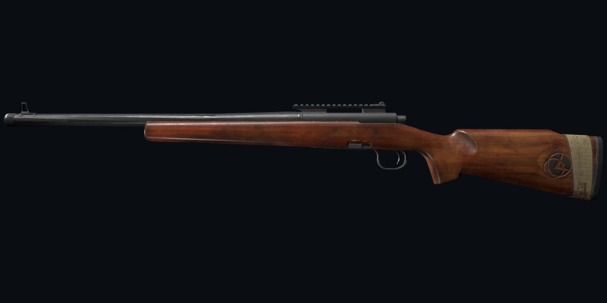
M700, fusil de précision
M700 Sniper Rifle · fusil de précision
Cette arme est classée fusil de précision dans le jeu. Valeur de référence 76 813 Tekniq soit 15 363 par case occupée.
76 813 Tekniqgrade 0 non classé · 15 363 par case
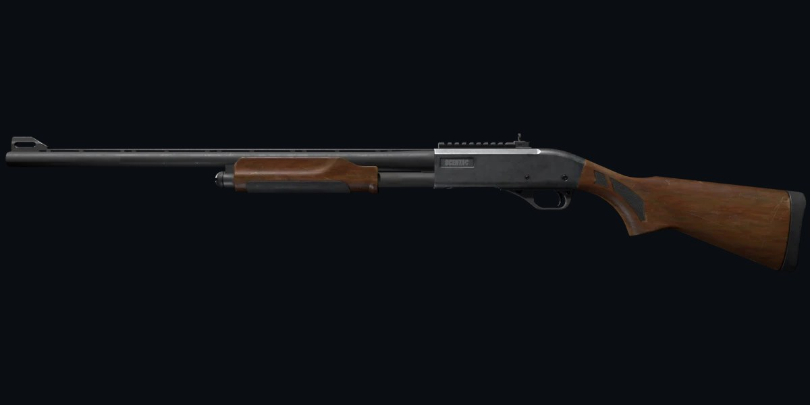
M870, fusil à pompe
M870 Shotgun · fusil à pompe
Cette arme est classée fusil à pompe dans le jeu. Son chargeur standard contient 6 coups. Chaque balle inflige 17 dégâts. Valeur de référence 4 664 Tekniq soit 933 par case occupée.
4 664 Tekniqgrade 0 non classé · 933 par case
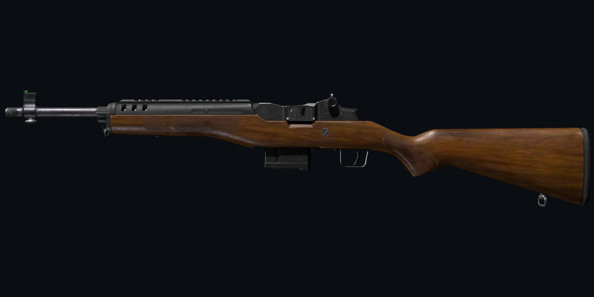
Mini-14, fusil de précision semi-auto
Mini-14 Marksman Rifle · fusil de précision semi-auto
Cette arme est classée fusil de précision semi-auto dans le jeu. Son chargeur standard contient 10 coups. Valeur de référence 36 843 Tekniq soit 3 684 par case occupée.
36 843 Tekniqgrade 0 non classé · 3 684 par case
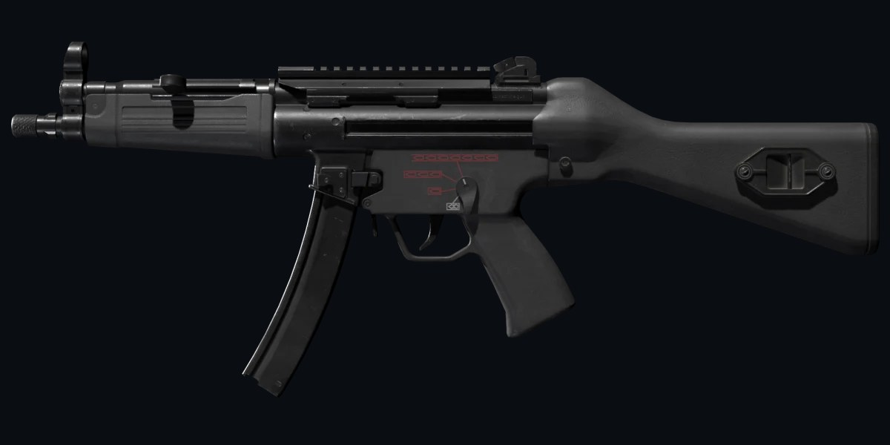
MP5, pistolet-mitrailleur
MP5 Submachine Gun · pistolet-mitrailleur
Cette arme est classée pistolet-mitrailleur dans le jeu. Valeur de référence 48 456 Tekniq soit 6 057 par case occupée.
48 456 Tekniqgrade 0 non classé · 6 057 par case
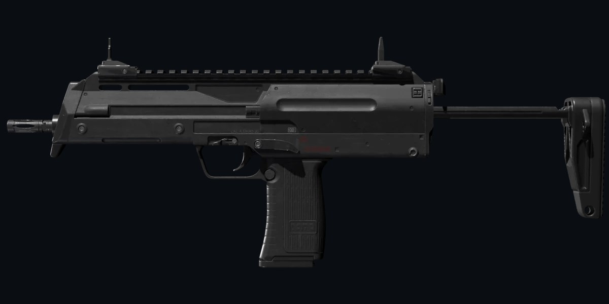
MP7
MP7 · pistolet-mitrailleur
Cette arme est classée pistolet-mitrailleur dans le jeu. Valeur de référence 152 610 Tekniq soit 19 076 par case occupée.
152 610 Tekniqgrade 0 non classé · 19 076 par case
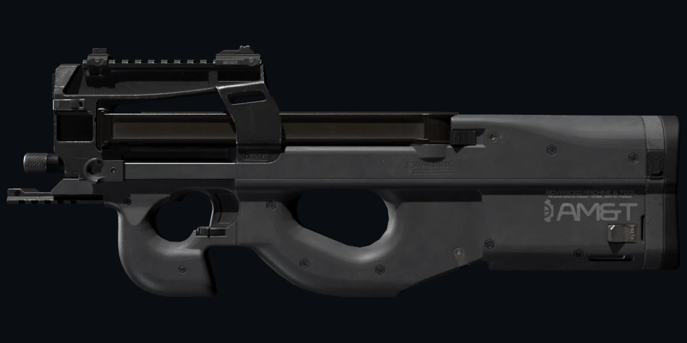
P90, pistolet-mitrailleur
P90 Submachine Gun · pistolet-mitrailleur
Cette arme est classée pistolet-mitrailleur dans le jeu. Valeur de référence 105 919 Tekniq soit 13 240 par case occupée.
105 919 Tekniqgrade 0 non classé · 13 240 par case
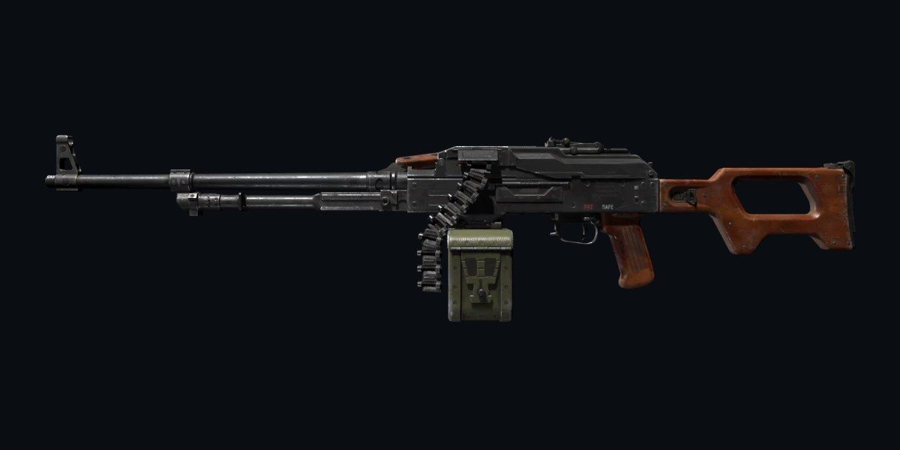
PKM, mitrailleuse lourde
PKM General Machine Gun · mitrailleuse légère
Cette arme est classée mitrailleuse légère dans le jeu. Valeur de référence 66 617 Tekniq soit 6 662 par case occupée.
66 617 Tekniqgrade 0 non classé · 6 662 par case
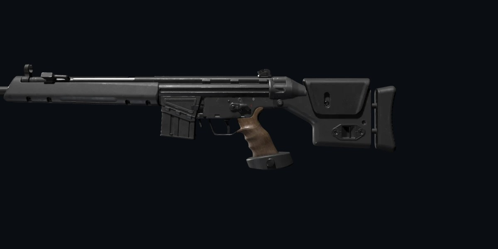
PSG-1, fusil de précision semi-auto
PSG-1 Marksman Rifle · fusil de précision semi-auto
Cette arme est classée fusil de précision semi-auto dans le jeu. Valeur de référence 67 727 Tekniq soit 6 773 par case occupée.
67 727 Tekniqgrade 0 non classé · 6 773 par case
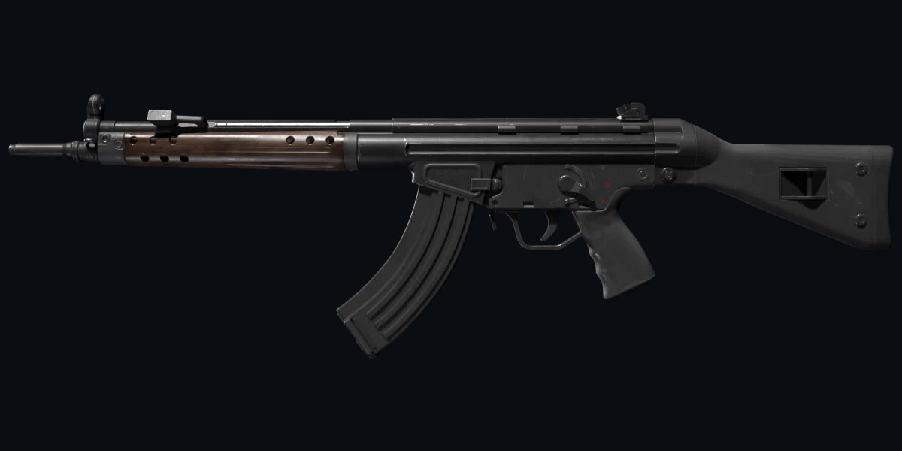
PTR-32, fusil d'assaut
PTR-32 Assault Rifle · fusil d'assaut
Cette arme est classée fusil d'assaut dans le jeu. Valeur de référence 37 442 Tekniq soit 3 744 par case occupée.
37 442 Tekniqgrade 0 non classé · 3 744 par case
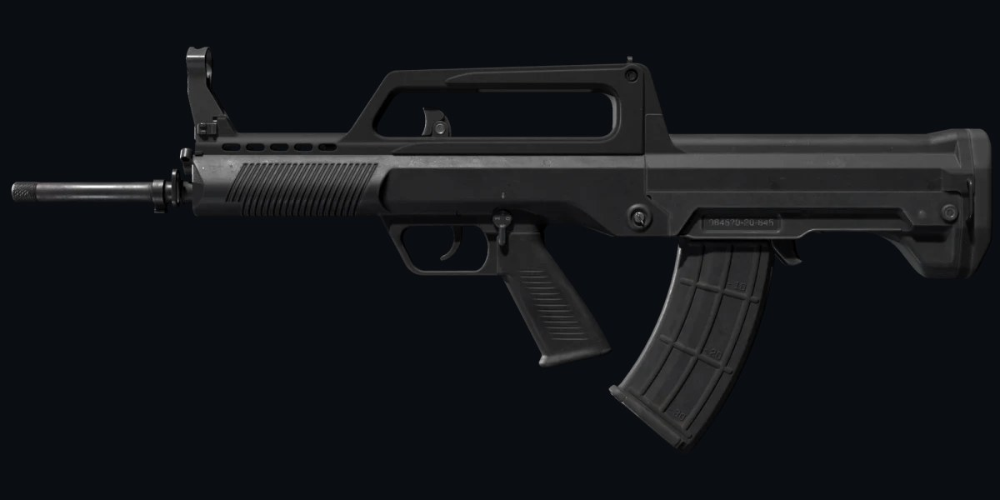
QBZ95-1, fusil d'assaut
QBZ95-1 Assault Rifle · fusil d'assaut
Cette arme est classée fusil d'assaut dans le jeu. Valeur de référence 38 035 Tekniq soit 3 804 par case occupée.
38 035 Tekniqgrade 0 non classé · 3 804 par case
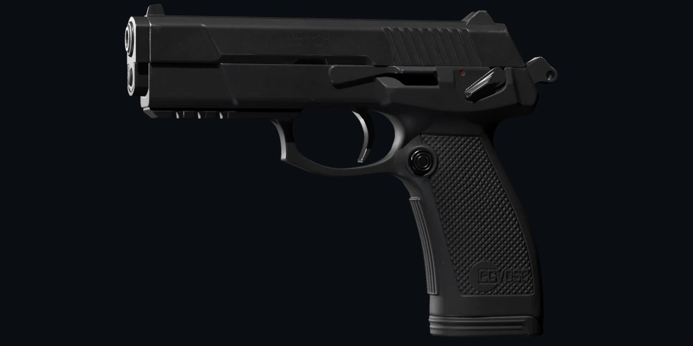
QSZ-92G
QSZ-92G · pistolet
Cette arme est classée pistolet dans le jeu. Valeur de référence 4 623 Tekniq soit 2 312 par case occupée.
4 623 Tekniqgrade 0 non classé · 2 312 par case
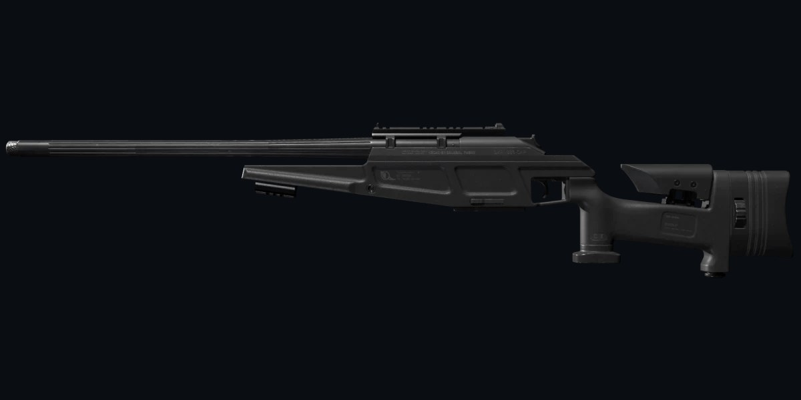
R93, fusil de précision
R93 Sniper Rifle · fusil de précision
Cette arme est classée fusil de précision dans le jeu. Valeur de référence 80 132 Tekniq soit 16 026 par case occupée.
80 132 Tekniqgrade 0 non classé · 16 026 par case
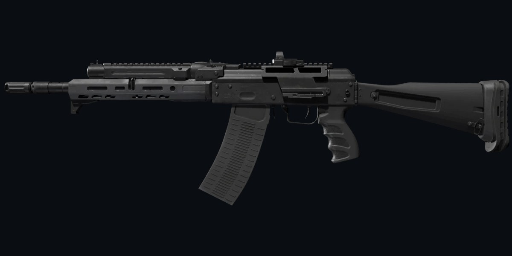
S12K, fusil à pompe
S12K Shotgun · fusil à pompe
Cette arme est classée fusil à pompe dans le jeu. Valeur de référence 38 863 Tekniq soit 3 886 par case occupée.
38 863 Tekniqgrade 0 non classé · 3 886 par case
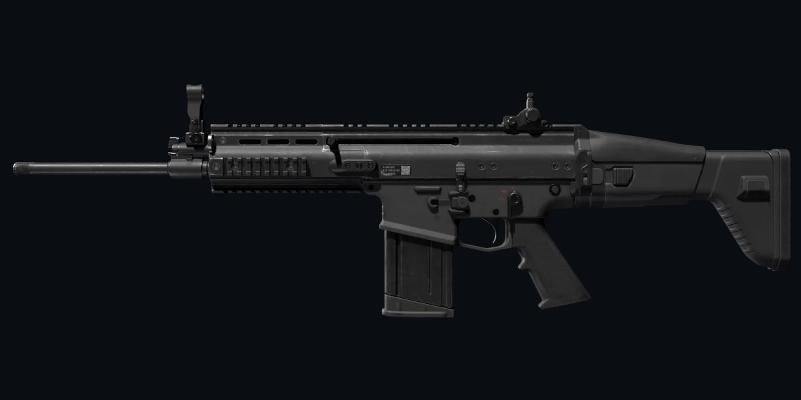
SCAR-H, fusil de combat
SCAR-H Battle Rifle · fusil d'assaut
Cette arme est classée fusil d'assaut dans le jeu. Valeur de référence 93 736 Tekniq soit 9 374 par case occupée.
93 736 Tekniqgrade 0 non classé · 9 374 par case
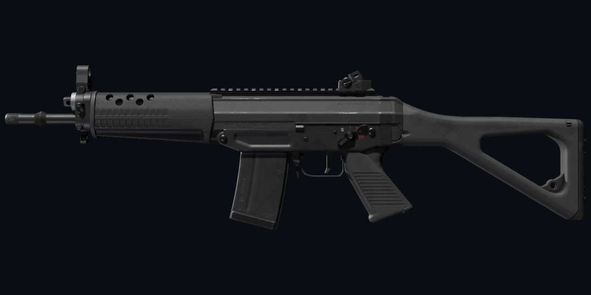
SG552, fusil d'assaut
SG552 Assault Rifle · fusil d'assaut
Cette arme est classée fusil d'assaut dans le jeu. Son chargeur standard contient 20 coups. Chaque balle inflige 25 dégâts. Valeur de référence 38 109 Tekniq soit 3 811 par case occupée.
38 109 Tekniqgrade 0 non classé · 3 811 par case
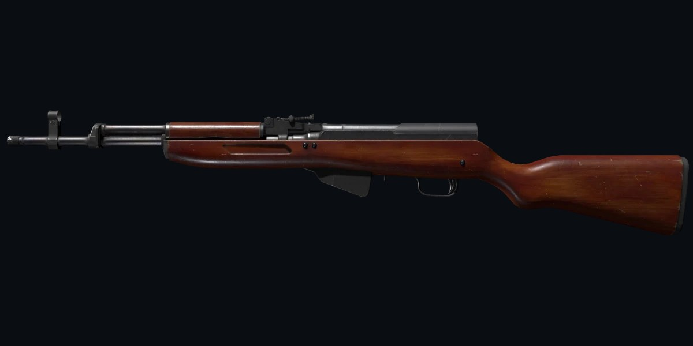
SKS, fusil de précision semi-auto
SKS Marksman Rifle · fusil de précision semi-auto
Cette arme est classée fusil de précision semi-auto dans le jeu. Valeur de référence 38 364 Tekniq soit 3 836 par case occupée.
38 364 Tekniqgrade 0 non classé · 3 836 par case
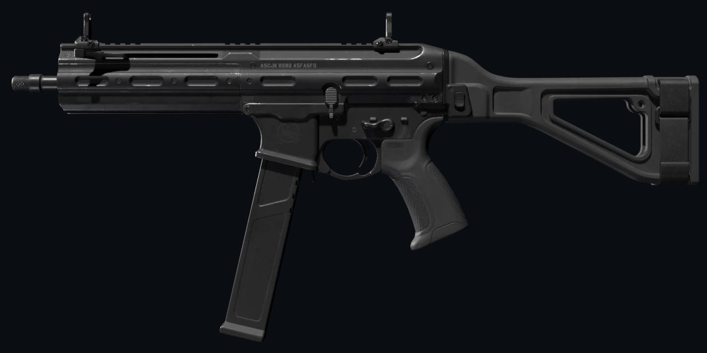
SMG-45, pistolet-mitrailleur
SMG-45 Submachine Gun · pistolet-mitrailleur
Cette arme est classée pistolet-mitrailleur dans le jeu. Son chargeur standard contient 25 coups. Chaque balle inflige 35 dégâts. Valeur de référence 59 507 Tekniq soit 7 438 par case occupée.
59 507 Tekniqgrade 0 non classé · 7 438 par case
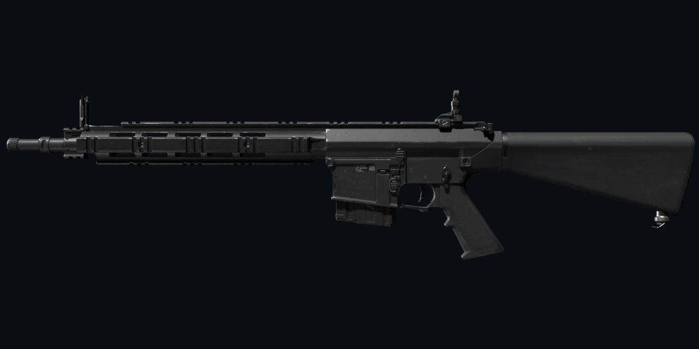
SR-25, fusil de précision semi-auto
SR-25 Marksman Rifle · fusil de précision semi-auto
Cette arme est classée fusil de précision semi-auto dans le jeu. Valeur de référence 119 197 Tekniq soit 9 933 par case occupée.
119 197 Tekniqgrade 0 non classé · 9 933 par case
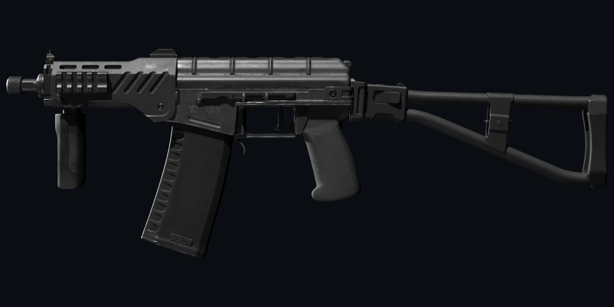
SR-3M Compact, fusil d'assaut
SR-3M Compact Assault Rifle · pistolet-mitrailleur
Cette arme est classée pistolet-mitrailleur dans le jeu. Valeur de référence 124 721 Tekniq soit 15 590 par case occupée.
124 721 Tekniqgrade 0 non classé · 15 590 par case
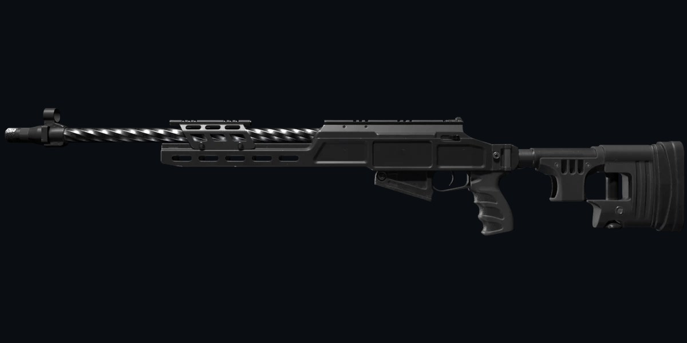
SV-98, fusil de précision
SV-98 Sniper Rifle · fusil de précision
Cette arme est classée fusil de précision dans le jeu. Valeur de référence 48 498 Tekniq soit 8 083 par case occupée.
48 498 Tekniqgrade 0 non classé · 8 083 par case
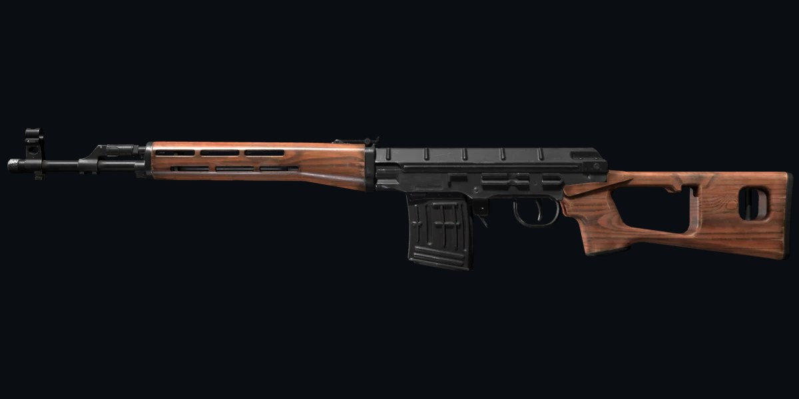
SVD, fusil de précision
SVD Sniper Rifle · fusil de précision semi-auto
Cette arme est classée fusil de précision semi-auto dans le jeu. Valeur de référence 67 922 Tekniq soit 6 792 par case occupée.
67 922 Tekniqgrade 0 non classé · 6 792 par case
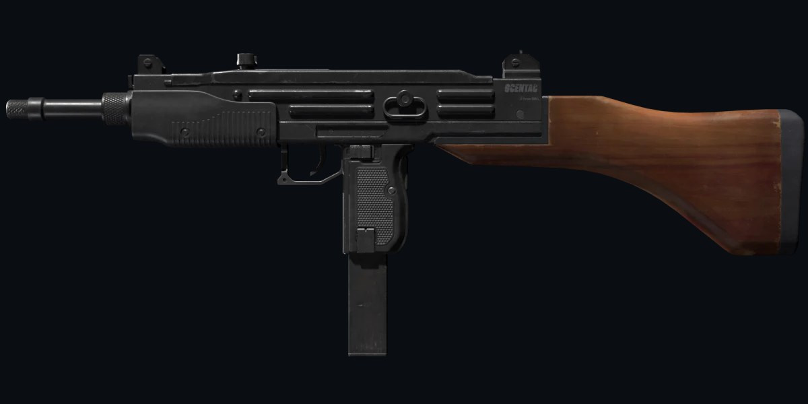
UZI, pistolet-mitrailleur
UZI Submachine Gun · pistolet-mitrailleur
Cette arme est classée pistolet-mitrailleur dans le jeu. Valeur de référence 11 476 Tekniq soit 1 913 par case occupée.
11 476 Tekniqgrade 0 non classé · 1 913 par case
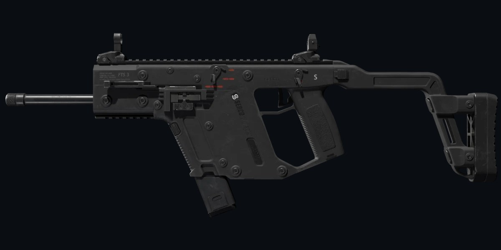
Vector, pistolet-mitrailleur
Vector Submachine Gun · pistolet-mitrailleur
Cette arme est classée pistolet-mitrailleur dans le jeu. Valeur de référence 98 880 Tekniq soit 12 360 par case occupée.
98 880 Tekniqgrade 0 non classé · 12 360 par case
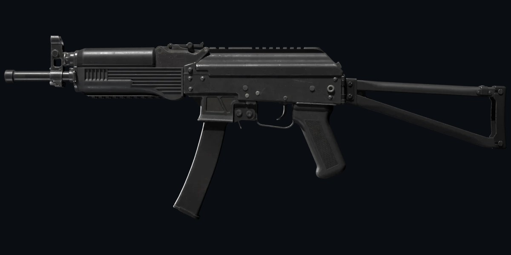
Vityaz, pistolet-mitrailleur
Vityaz Submachine Gun · pistolet-mitrailleur
Cette arme est classée pistolet-mitrailleur dans le jeu. Valeur de référence 47 969 Tekniq soit 5 996 par case occupée.
47 969 Tekniqgrade 0 non classé · 5 996 par case
VSS, fusil de précision semi-auto
VSS Marksman Rifle · fusil de précision semi-auto
Cette arme est classée fusil de précision semi-auto dans le jeu. Valeur de référence 44 770 Tekniq soit 4 477 par case occupée.
44 770 Tekniqgrade 0 non classé · 4 477 par case
Valeurs de référence relevées hors direct : elles servent à comparer deux objets, pas à fixer un prix de vente. Le nom d’origine reste affiché sous chaque fiche pour que la correspondance avec l’écran du jeu soit immédiate.